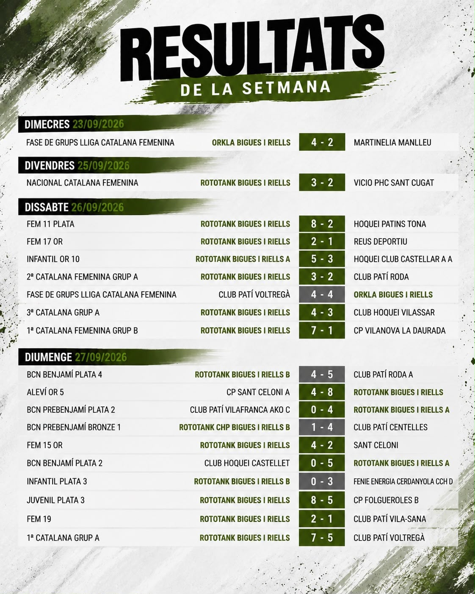
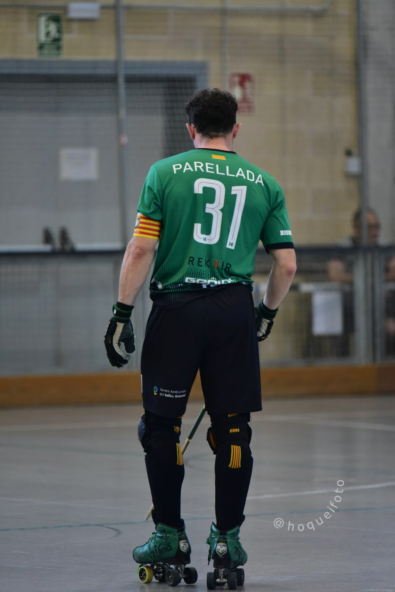
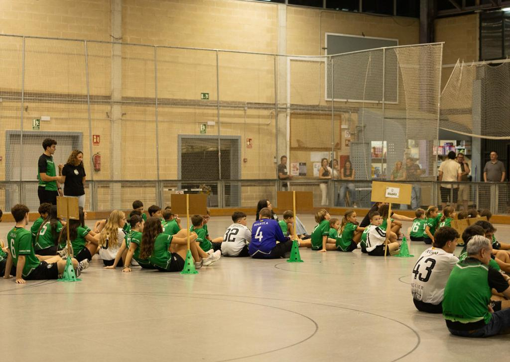
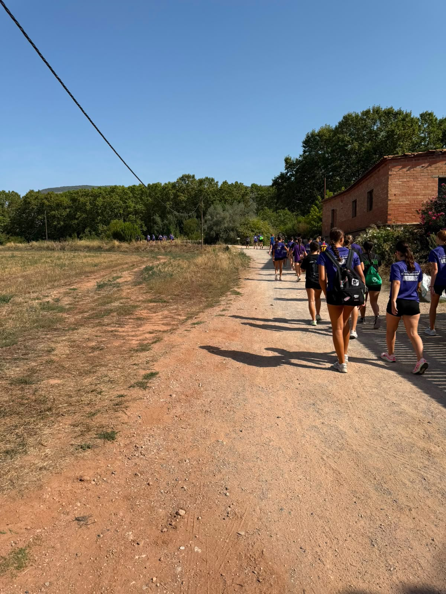

ACTUALITAT DEL CLUB
NOTÍCIES
I RESULTATS
La vida del Bigues i Riells, dins i fora de la pista.
04 / ACTUALITAT
01NOTÍCIES I CRÒNIQUES
 EL PRIMER EQUIP FEMENÍ ES PROCLAMA CAMPIÓ DE LA LLIGA CATALANA! 🏆
EL PRIMER EQUIP FEMENÍ ES PROCLAMA CAMPIÓ DE LA LLIGA CATALANA! 🏆
El CH Patí Bigues i Riells aixeca el títol de la Lliga Catalana després d'una competició marcada per l'esforç, el compromís i el treball en equip.
El primer equip femení del Club Hoquei Patí Bigues i Riells ha fet història proclamant-se campió de la Lliga Catalana.
Després de superar el Generali Club Palau i Solità de Plegamans a les faltes directes del partit de la semifinal, l'equip ha aconseguit aixecar un títol molt especial, compartit amb tota la família del club davant un gran rival, el Club Hoquei Cerdanyola.
El pavelló de Can Badell ha estat un dels grans protagonistes d'aquesta fita. L'afició ha omplert les grades i ha animat l'equip en tot moment, demostrant, una vegada més, que la força del Bigues va molt més enllà de la pista.
Des del CH Patí Bigues i Riells volem felicitar les jugadores i el cos tècnic per aquesta gran victòria i agrair a tota l'afició el suport incondicional.
VEURE FOTO EN GRAN ↗
El primer equip masculí suma la primera victòria de la temporada
El primer equip masculí del Club Hoquei Patí Bigues i Riells va aconseguir la seva primera victòria de la temporada en la segona jornada de lliga, després d’imposar-se per 7-5.
L’equip va sumar així els seus primers tres punts de la temporada en un partit intens i disputat, fent un pas endavant en aquest inici de competició.
Aquesta primera victòria reforça el treball que està fent el conjunt i permet continuar avançant amb confiança cap als objectius marcats per aquesta temporada 2026-2027.
Un pas més per aconseguir l’objectiu.
HAKUNA MATATA! 💚🖤
VEURE FOTO EN GRAN ↗
El Bigues i Riells presenta els equips de la temporada 2026-2027
El passat 25 de setembre, el Club Hoquei Patí Bigues i Riells va celebrar la presentació oficial dels equips de la temporada 2026-2027, una jornada que va reunir jugadors, jugadores, entrenadors, famílies i afició.
L’acte va servir per donar a conèixer els diferents equips que representaran el club aquesta temporada i per donar el tret de sortida oficial a un nou curs ple de reptes, il·lusió i molt d’hoquei.
La presentació també va ser una oportunitat per reunir la família del Bigues i Riells, compartir un moment especial fora de la competició i posar en valor totes les persones que formen part del club.
Una nova temporada ja està en marxa. Ara toca gaudir-la, competir i continuar creixent junts!
Som-hi, Bigues! 💚🖤
VEURE FOTO EN GRAN ↗
EL CLUB CELEBRA L'STAGE DE PRETEMPORADA 2026
Els dies 5 i 6 de setembre, el Club Hoquei Patí Bigues i Riells va celebrar el seu stage de pretemporada, dues jornades dedicades a preparar l’inici de la nova temporada.
Durant el cap de setmana, els equips del club van poder tornar a la pista, compartir entrenaments i continuar agafant ritme abans de l’inici de les competicions oficials.
Més enllà del treball esportiu, el stage també va servir per reforçar la cohesió entre jugadors, jugadores i equips, compartir moments fora de la competició i començar a construir les bases d’una nova temporada.
Dos dies d’hoquei, equip i club per donar el tret de sortida a un nou curs esportiu.
Comença una nova temporada. Som-hi, Bigues! 💚🖤
VEURE COLLAGE DE FOTOS ↗No hi ha notícies en aquesta categoria.